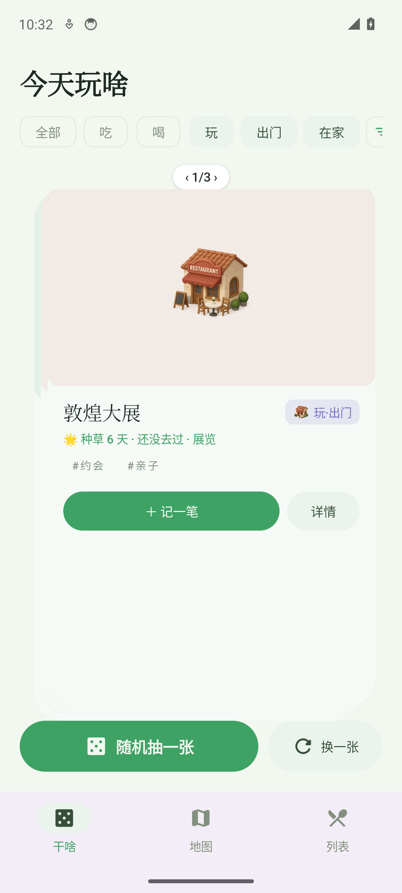
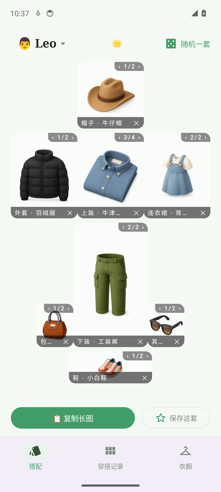
对吃啥（eats）与衣橱（wardrobe）两应用共 27 个页面状态做模拟器实机截图走查，逐页视觉评审并以 uiautomator 断言与源码核对做交互实测。汇总为 P0/P1/P2 分级问题清单，对两个 P1 级问题给出灰盒改版线框：蓝色数字徽标与右侧改版要点一一对应。
模拟器 1080×2400 实装最新 main 构建，逐页导航截图 + uiautomator 文本树留档
每页按版式/层级/文案/留白四维检查，问题落到具体位置并分级
关键结论以行为断言或源码核对实锤（Compose 控件不暴露 selected，采用行为对比）
| # | 问题 | 涉及页面 | 级别 | 修法（对应线框） |
|---|---|---|---|---|
| C1 | 卡片点击语义不一致 | wardrobe W3（eats W3 为正例） | P1 | 编辑收进右上角更多菜单，卡片单击进详情；见 W1 线框 |
| C2 | 内容不满时的空档管理 | eats W1 抽中态 · W1 卡片 · W6 预览 | P2 | 固定高度容器遇到少内容时按内容收缩或让结果块接管空间；见 E1 线框 |
| C3 | 待真机复核项 | eats W2 地图噪条 | P2 | 模拟器截图管线伪影可能性高；真机复核后再定是否修渲染 |
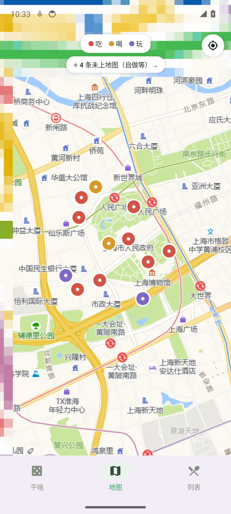
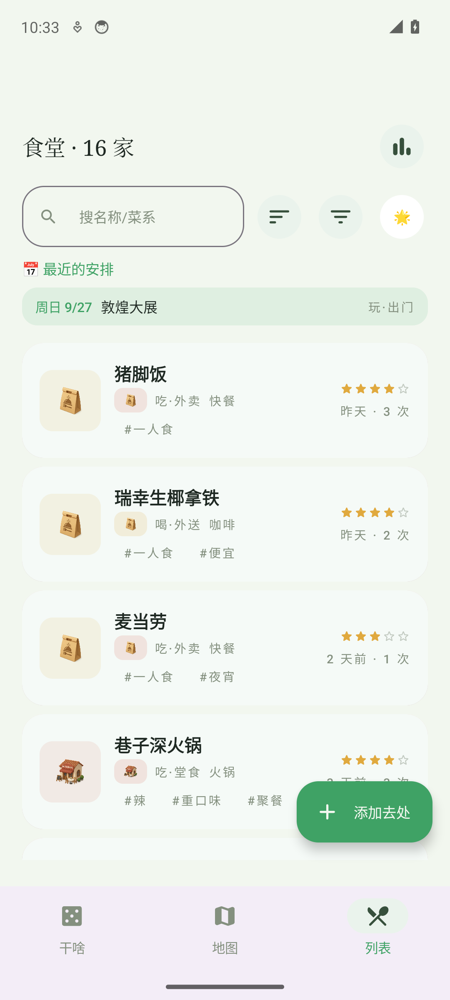
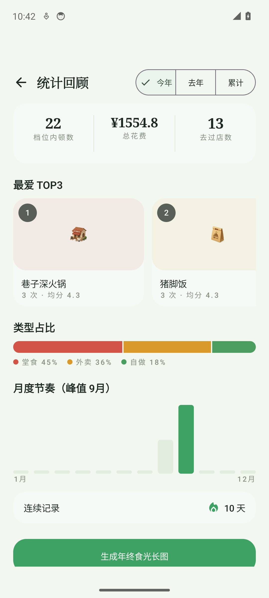
W1 抽中落定是本应用最高频的「高潮时刻」，但抽中后卡组整片飞空、结果块孤悬屏底，高潮被 ~40% 屏的空白稀释；其余页面（地图/列表/详情/回顾/长图）状态良好，仅存观感级问题。
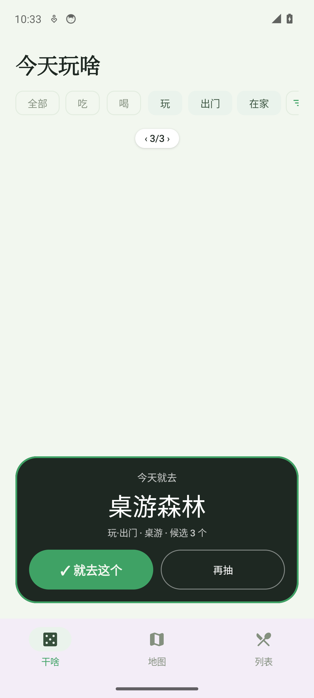
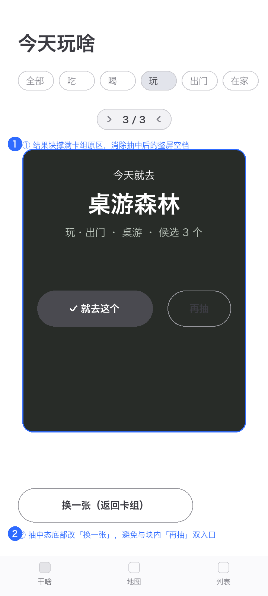
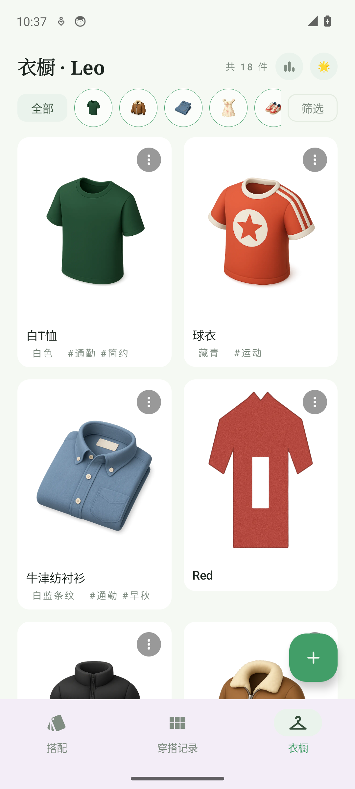
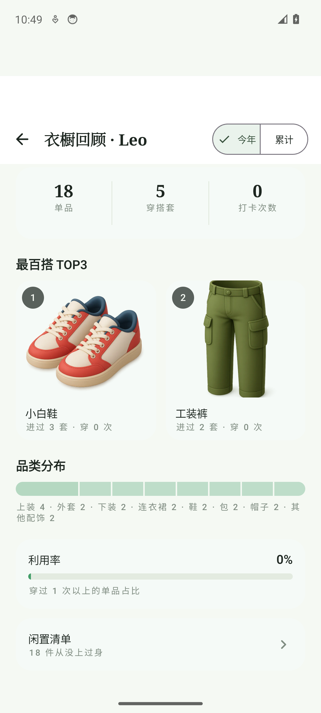
衣橱网格的视觉与信息密度是两应用最好的页面之一，但卡片单击被绑定为「进编辑」，W5 详情（大图/评论/穿搭反查）从此页无路可达——高频的「看看这件」被低频的「改这件」抢占。
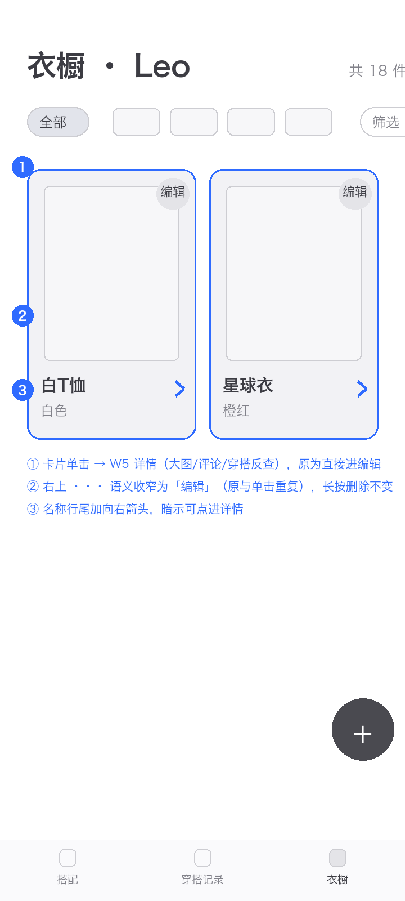
按仓库迭代流程确认后动工；先修共性问题（功能在但用户够不着/猜不到），再修各 App 核心体验。
| 线框 | 内容 | 对应 |
|---|---|---|
| O1 | 结果块上移撑满卡组区，消除空屏 | E1 |
| O2 | 抽中态底部改「换一张」单一出口 | E1 |
| O3 | 列表 LazyColumn 底部 contentPadding 预留 FAB 高度 | E1 |
| 线框 | 内容 | 对应 |
|---|---|---|
| O1 | 卡片单击 → W5 详情 | W1 |
| O2 | 右上更多菜单改「编辑」直入，长按删除不变 | W1 |
| O3 | 名称行 › 提示 + W9 空指标改打卡引导 | W1 |
| 项目 | 结论 |
|---|---|
| 抽中落定 → 结果块/卡序/再抽 | 功能正常；布局空屏判 P1（E1 实拍证据） |
| 衣橱卡片单击 | 直达编辑表单；无详情路径（源码 combinedClickable 实锤） |
| 转正表单无照片提交 | 按钮置灰 + 原因文案「先拍一张实物照」——it-023 夜间修复复验通过 |
| 地图回位按钮 | 定位正常；噪声条带不消失（疑截图管线伪影，待真机） |
| 长图生成 → 预览 → 存相册 | eats/wardrobe 双端全链路成功（e-12/夜间 QA） |
| 落账 → 拔草 → 撤销 snackbar | 撤销闭环成功（it-008 US-10 复验） |
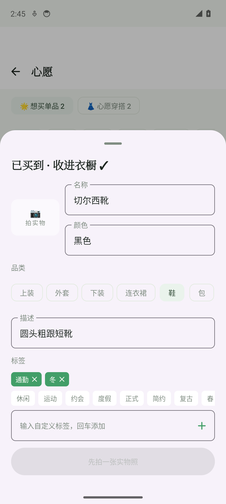
现状截图与改版线框见 assets/ 目录；本报告由 report_template.py 生成，可改数据重出。